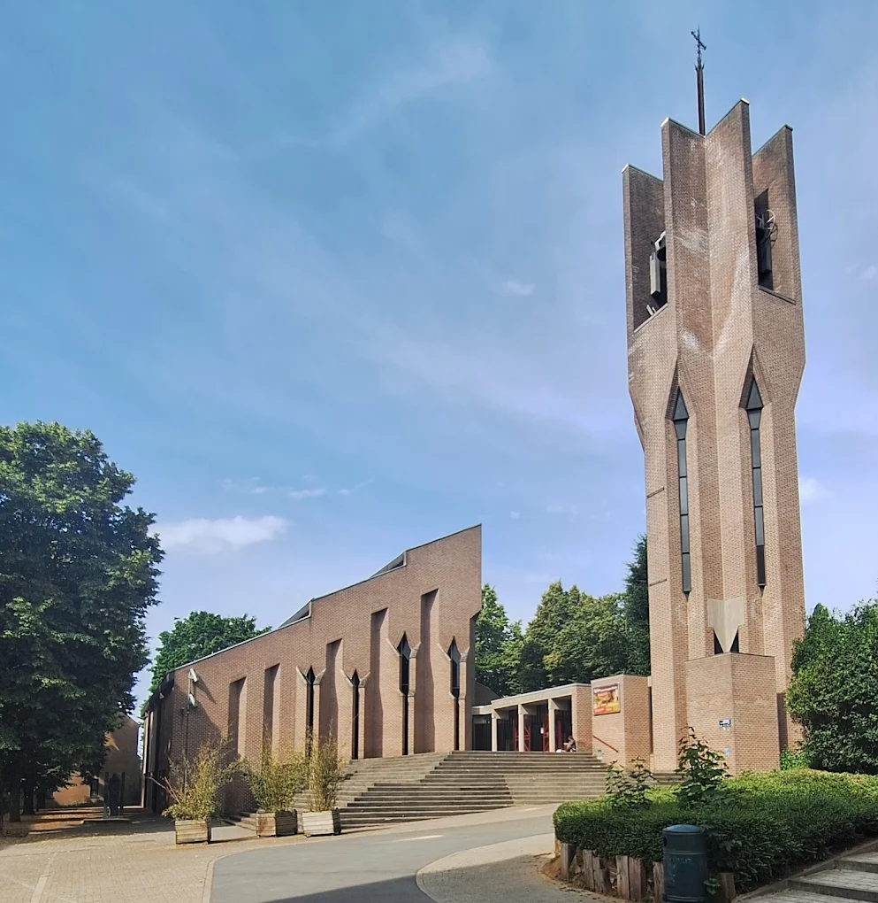

Vivre sa foi, grandir & fraterniser au cœur du campus.
Que tu sois nouveau à Louvain-la-Neuve, habitué du mercredi soir ou simplement en recherche : la Pastorale Étudiante t'accueille pour prier, chanter, te former et partager de vraies amitiés.
Dis-nous ce que tu cherches aujourd'hui
Clique sur une porte d'entrée pour découvrir comment rejoindre une activité, un groupe, la chorale ou un kot.
L'AGENDA DE LA Semaine
Nos rendez-vous réguliers pendant les semaines de cours à Louvain-la-Neuve.
Horaires des Messes & Confessions
Tous les horaires pour prier en semaine ou le week-end à l'Église Saint-François, chez les Dominicains et à la Chapelle de la Source.
Messes des Étudiants
📍 Église Saint-François & Couvent des Dominicains
Messes Paroissiales
📍 Av. Jean-Libert Hennebel 30B (face au Martin's)
Prière & Confessions
📍 Église Saint-François & Communautés
Prochains Événements & Temps forts
Messes à thème, soirées The Chosen, parcours P.A.F., actions solidaires aux 24h Vélo et retraites.
Moments de Fraternité & Liturgie
Retour en photos sur les messes du mercredi, la chorale étudiante et les 24h Vélo. Clique sur une photo pour l'agrandir !
Les Kots & Résidences chrétiennes
À Louvain-la-Neuve, 11 kots, foyers et résidences te proposent de vivre une année d'étude fraternelle, engagée et priante.
L'Équipe « La Pastèque » & le CPE
Une équipe de prêtres, d'animateurs pastoraux et d'étudiants engagés (reconnaissables à leur foulard rouge le mercredi soir !) à ton écoute.

Un accueil fraternel au cœur du campus
La Pastorale Étudiante de Louvain-la-Neuve est portée conjointement par :
- 🍉 « La Pastèque » (Équipe d'accompagnement pastoral) : nos prêtres (Père Éric Mattheeuws et Père Alexandre Wallemacq), Marie Beaussant (animatrice pastorale), Pierre de Mahieu et Marc Rombouts.
- 🧣 Le CPE (Conseil de la Pastorale Étudiante) : 9 étudiants issus des différents kots et groupes de LLN, faciles à repérer grâce à leur foulard rouge et leur badge lors des messes et événements.
- 📸 Le ComKot : l'équipe étudiante chargée de la communication, des photos, du compte Instagram @pastoralelln et de la mise à jour de ce site.
Venir nous rencontrer
L'Église Saint-François d'Assise est située en plein centre piétonnier de Louvain-la-Neuve, juste en face de l'hôtel Martin's Agora.
1348 Louvain-la-Neuve
Infos & accès via @pastoralelln

Instagram & Appli OClocher
Chaque dimanche soir, le ComKot publie L'Agenda de la Semaine sur Instagram. Tu peux aussi rejoindre la paroisse sur l'application OClocher pour recevoir les notifications et horaires !